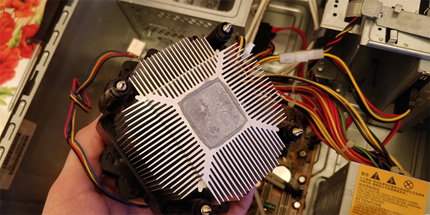

Adrian Grabowski
Chicago, IL
Email: agrabowski@hawk.iit.edu
Github Page
Objective
To major in Infomation Technology and Management so that I can pursue a career in the IT field where I can help others and work around Technology.
Education
- Chicago Academy High School (2016-2020)
- Illinois Institute of Technology (2020-present)
- Working towards a Bachelor degree for Infomation Technology and Management
Skills
- Programming: HTML & CSS, Java, Python, and Lua
- Electronics: Assembling Computers and Taking Apart Electronics
- Software: Adobe Creative Suite, Vegas Pro, Windows, Android, G-Suite
- Languages: English and Polish
Experience
- Voluntering at Free Geek Chicago
- Worked hands-on to disassemble old computers for recycling or refurbishing
- Stayed organized when working and putting everything in the right labeled place
- Driven to continue working for multiple hours
Personal Activities
- Video Games, Graphics Design, Building Websites, Working with Computers, and Taking things apart
